Ein Reisebericht zum Trekking vom Hochland zum Chute de Sakaleona und weiter bis nach Nosy Varika
 Die gewaltigen Wassermassen stürzen die Klippe hinunter, eine unglaubliche Gischtwolke zieht sich entlang der Felswand und es weht ein steifer Wind. Die Luft ist voll von Wassertropfen, als ob es regnen würde und wir sind im Nu klitschnass. Wir ducken uns hinter einem Felsen, um noch einige Augenblicke beim Wasserfall zu bleiben. Nur 30 Meter sind wir vom Chute de Sakaleona entfernt, dem höchsten Wasserfall Madagaskars und mit seinen 200 Metern Fallhöhe auch einer der höchsten weltweit.
Die gewaltigen Wassermassen stürzen die Klippe hinunter, eine unglaubliche Gischtwolke zieht sich entlang der Felswand und es weht ein steifer Wind. Die Luft ist voll von Wassertropfen, als ob es regnen würde und wir sind im Nu klitschnass. Wir ducken uns hinter einem Felsen, um noch einige Augenblicke beim Wasserfall zu bleiben. Nur 30 Meter sind wir vom Chute de Sakaleona entfernt, dem höchsten Wasserfall Madagaskars und mit seinen 200 Metern Fallhöhe auch einer der höchsten weltweit.
Schon vor Jahren haben wir uns mit diesem Wasserfall beschäftigt, aber es schien uns fast unmöglich zu ihm vorzustossen. Auch im Internet gab es lange Zeit keine Bilder. Plötzlich waren da aber zwei Franzosen, die es gewagt haben, den Chute de Sakaleona zu besuchen und Bilder im Internet veröffentlichen. Da war es auch für uns höchste Zeit, es selber zu versuchen.
Im Voraus planten wir unsere Trekking-Tour vom Hochland aus. Von Ambositra über Fandriana wollen wir zu unserem Ausgangpunkt Ambendrana gelangen. „Wir“ heisst hierbei Sandra, Michaël, unser Guide, und ich, die im Auftrag von PRIORI dieses unbekannte Trekking auskundschaften sollen.
Michaël hatte Ambendrana schon vorgängig besucht und sich nach einem lokalen Führer und einigen Trägern umgesehen.
Auf unserer Reise im September 2018 treffen wir dann am frühen Nachmittag in Ambendrana ein und finden auch bald Rakoto, unseren Führer, und seine Träger.
-
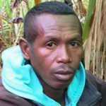
- Rakoto, 40
-
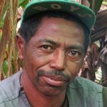
- Raher, 48
- Lôd, 32
-
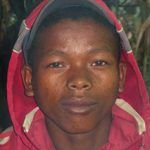
- Mona, 20
- Rôla, 28
-
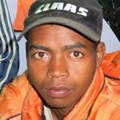
- Ndria, 28
Sie tragen unser Gepäck ins Dorf, d.h. in die kleine Siedlung mit einigen Häusern. Die Häuser der Betsileo sind aus Ziegelsteinen gebaut und zweistöckig. Unten leben die Tiere, Enten und Hühner und oben befindet sich die Küche und die Zimmer. Unser Abendessen wird in Rakotos Küche zubereitet und besteht fast ausschliesslich aus Reis (so wie es in Madagaskar auch üblich ist.)
Die Nacht verbringen wir auf dem Fussboden des nahegelegenen Schulhauses, es ist recht kühl in dieser Nacht.
Tag 1:
Der erste Tag unseres Trekkings beginnt mit der Gepäckverteilung auf unsere Träger, damit alle auch etwa die gleichen Gewichte zu tragen haben. Mittlerweile hat sich noch ein Parkwächter des Nationalparks Marolambo zu uns gesellt und sich ebenfalls als Träger zur Verfügung gestellt. So besteht unsere Trekking-Gemeinschaft also aus zwei Touristen, einem Guide und sechs Trägern.
Um 08:45 Uhr können wir dann gemeinsam losmarschieren. Bei schönstem Wetter schlagen wir einen Weg nach Nordosten ein, um baldmöglichst auf unsere vorgeplante Route zu stossen. Schon bald haben wir unseren Pfad erreicht und folgen ihm. Kurz vor Mittag kommen wir auf einen kleinen Markt. Dieser liegt auf einer Anhöhe weit weg von jeglicher Siedlung. Hier treffen sich die Leute aus der Umgebung zum Sehen und Gesehen werden. Hier soll es den besten „Toaka gasy“ geben. Also probieren wir diesen selbst gebrannten Rum – der uns fast aus den Socken haut 😉 .
Unsere Träger verbrauchen natürlich viele Kalorien und so müssen wir am Mittag einen Halt einlegen, um Reis zu kochen. Dazu gibt es einige Crevetten.
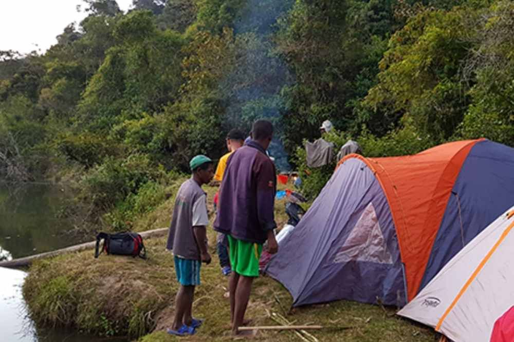
Nach 1,5 Stunden geht es weiter, meist durch Eukalyptuswälder mit Blick auf die Höhen, wo der Primärwald noch intakt ist. Um 15:30 Uhr kommen wir dann an einen Fluss. Hier gab es einmal eine Brücke oder besser gesagt einen dicken Baumstamm, um den Fluss zu überqueren. Diesen hatte es nun leider nicht mehr. Der Fluss ist tiefer als hüfttief und darum unpassierbar. Der Parkwächter kennt aber eine weitere Stelle am Fluss, an dem einige umgestürzte Bäume uns die Überquerung ermöglichen. Wir ziehen die Schuhe aus und klettern über Stämme und waten durchs Wasser auf die andere Seite. Schon bald haben wir die ursprüngliche Stelle unseres Routenverlaufs erreicht, aber nun auf der anderen Flussseite. Auf einer kleinen Wiese errichten wir unser Zeltlager. Jetzt setzt auch ein Nieselregen ein, der uns in den Zelten aber nicht stark stört.Tag 2:
Schon um 05:00 Uhr am Morgen machen unsere Träger ein Feuer und bald darauf gibt es schon Kaffee und auch ein Frühstück (vary aminanana).
Das Aufräumen und Verpacken unseres Gepäcks dauert nach der ersten Übernachtung etwas länger. Wo muss was verstaut werden, damit die Tragsäcke wieder bereit sind?
Um 07:45 Uhr brechen wir bei Regenwetter auf. Durch den Regenwald schlängelt sich ein schmaler Pfad und schon bald müssen wir wieder durch einen kleinen Fluss waten. Der heutige Tag führt uns meist durch Waldgebiete oder über Höhenzüge, die mit Farn bedeckt sind. Immer wieder sind Wasserläufe oder kleine Sümpfe zu durchqueren, zum Teil sogar recht akrobatisch über improvisierte Stege. Zum Glück hat der Regen aufgehört. Ab und zu kommen wir an einem einzelnen Haus vorbei, in dem eine Familie in einfachen Verhältnissen wohnt.
Weil die heutige Etappe etwas beschwerlich ist, kommen wir nicht so weit wie geplant. Die Nacht verbringen wir bei einem verlassenen Haus, das von grossen Bohnenbeeten umgeben ist. Es ist darum recht eng. Darum schlafen Sandra und ich in der Hütte. Leider tun einige Flöhe dies mit uns.
Tag 3:
Am heutigen Vormittag müssen wir bei trockenem Wetter etwa eine Stunde durch einen Sumpf waten. Natürlich versuchen wir von einer Bülte zur anderen zu gelangen, aber oft ist das nicht möglich und so waten wir teilweise knietief durch den Sumpf.
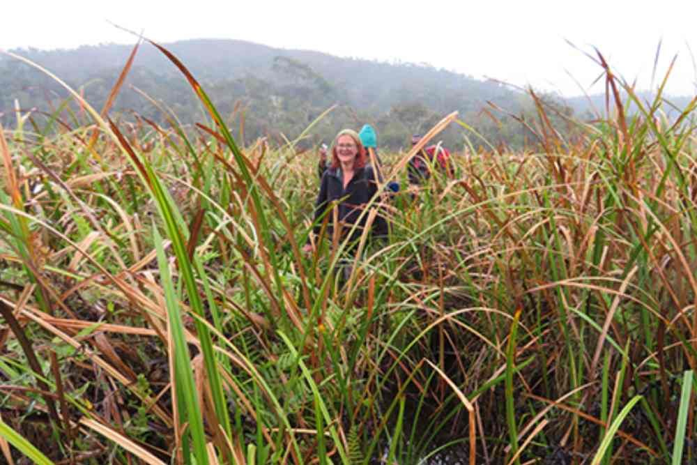
Dann geht es zum Glück wieder etwas aufwärts und der Weg ist wieder trocken. Gegen Mittag erreichen wir eine offene Fläche, auf der einige Häuser stehen, und wir erblicken eine Kirche, ein grösseres Haus mit Maueröffnungen als Fenster und einigen alten Kirchenbänken. Auch hier wohnt eine Familie, die uns ihre Küche zur Zubereitung unseres Mittagsessens zur Verfügung stellt. Zwischen der Familie, den Trägern und Michaël gibt es viel zu erzählen. Für Sandra und mich ist die Unterhaltung mit allen leider etwas mager, da wir kaum Madagassisch sprechen.Der Nachmittag ist dann wieder etwas beschwerlicher. Es beginnt zu regnen und der Weg führt durch dichten Wald. Auf einer kleinen Lichtung steht wiederum eine kleine Hütte, die von einer weiteren Familie bewohnt wird. Hier stellt sich uns die Frage: „Wie kann man hier leben und wie kommt diese Familie hier in der Abgeschiedenheit zurecht? Ein junger Mann zeigt uns den Weg bis zum Sakaleona-Fluss. Diesen überqueren wir noch und finden bald mitten im Wald unseren Campingplatz. Es ist sehr eng hier, wir können nur zwei Zelte aufschlagen. Unsere Träger nächtigen rund ums Feuer herum unter einer grünen Plane.
Tag 4:
Die ganze Nacht hat der Wasserfall gerauscht, also können wir nicht sehr weit von ihm entfernt genächtigt haben. Wir klettern über Bäume und Felsen, um endlich die Oberkante des Wasserfalls zu sehen. Über mehrere Stromschnellen rauscht das Wasser heran und fällt über eine Kante, die uns aber den Blick auf den eigentlichen Chute de Sakaleona verwehrt. Aber wir können über die Felsen im Sakaleona-Fluss klettern. Nur nicht zu nah an den Abgrund gehen!
Nun gilt es die 200 Meter nach unten zu steigen. Zum Glück hat der Regen aufgehört und es klart auf. Der Weg führt in einem weiten Bogen nach unten und ist sehr anspruchsvoll. Zweimal nehmen wir unser mitgeführtes Seil zu Hilfe, um eine Felsrippe hinunter zu klettern. Wie unsere Träger das mit der Last und in ihren Flip-Flops schaffen, ist mir ein Rätsel.
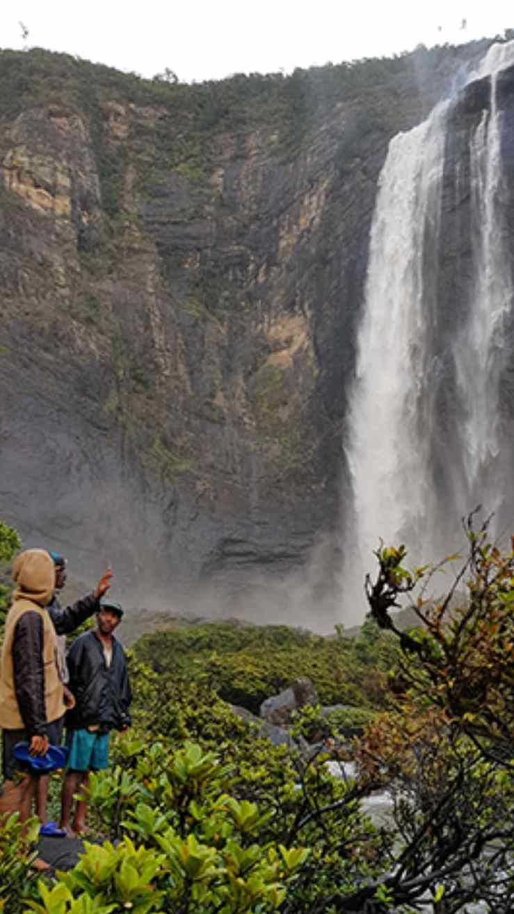
Endlich unten angekommen, finden wir ein kleines Dorf, wo uns die ganze Dorfgemeinschaft schon erwartet. Von hier aus ist der Chute de Sakaleona aber nur teilweise zu sehen. Sandra lässt ihre Drohne fliegen und kann so bereits den Chute de Sakaleona in seiner ganzen Pracht sehen.
Wir ziehen weiter, ein Stück den Fluss hinunter und überqueren ihn. Dann geht es auf der anderen Seite wieder ein gutes Stück den Fluss hinauf ins Dorf Ambondron. Hier werden wir auch die Nacht verbringen. Jetzt aber wollen wir den Chute de Sakaleona sehen. Wir klettern wohl noch eine halbe Stunde über Steine und über Abgründe bis wir endlich am Fusse des Sakaleona-Wasserfalls ankommen.
Mit einer gewaltigen Kraft stürzen die Wassermassen herunter… aber das kennen wir ja bereits. Klitschnass wenden wir uns vom Fall ab. Tief beeindruckt kehren wir ins Dorf zurück. Hier werden wir von den Bewohnern interessiert empfangen und es gibt hier sogar einen gewissen Austausch und wenn es nur die Bitte ist, den Riss in meiner Hose zu nähen.
Tag 5:
Der Morgen beginnt mit einem wundervollen Sonnenaufgang. Sie spiegelt sich mit zarten Rot- und Gelbtönen im Wasserfall. Sandra lässt darum nochmals ihre Drohne fliegen.
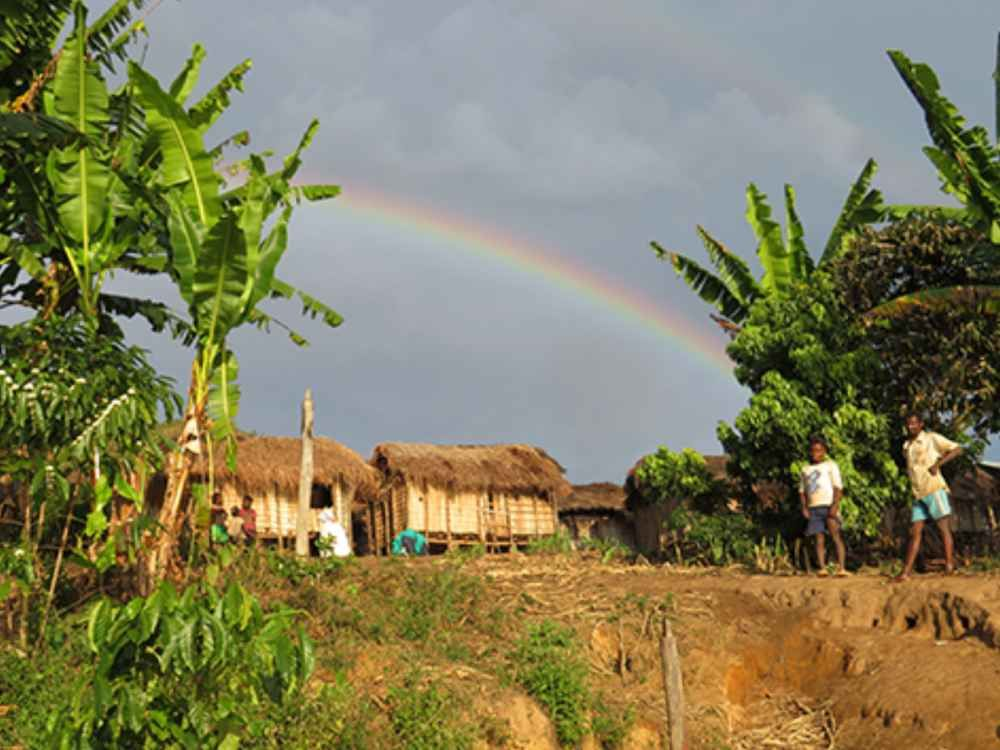
Um kurz vor 08:30 Uhr verlassen wir Ambondron und wandern bei schönstem Wetter mehr oder weniger am Sakaleona-Fluss entlang. Es geht zwar immer etwas auf und ab, aber die Landschaft ist wunderschön und wir passieren immer wieder stattliche Dörfer mit 30 – 40 Häusern. In einem dieser Häuser nehmen wir auch das Mittagessen ein.Der Nachmittag verläuft etwa gleich, bis wir an eine Flussbiegung kommen. Hier müssen wir den Sakaleona mit einer Piroge überqueren, um ins gegenüberliegende Dorf zu gelangen. Mittlerweile setzt Donnergrollen ein und über dem Dorf zeigt sich ein wunderschöner Regenbogen. Hier beziehen wir unser Nachtquartier. Unser Reiseteam darf in einer Hütte kochen und in einer weiteren, sehr sauberen Hütte auch schlafen.
Tag 6:
Dieser Tag wird etwas mühsam werden – 28.7 km stehen uns bevor, zum Glück bei sehr guten Wetterverhältnissen. Hinzu kommen zwei sehr steile Aufstiege. Sandra gerät zum ersten Mal etwas ausser Atem. Aber nach einer kurzen Verschnaufpause gehen wir beruhigt weiter.
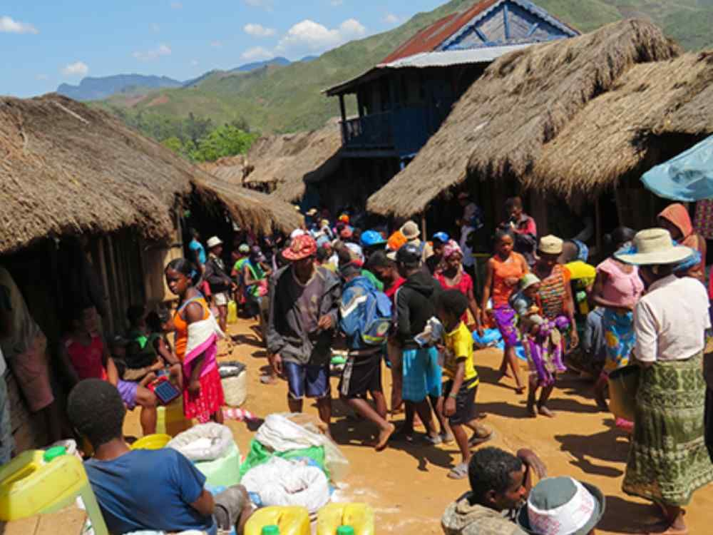
In Antanambao, einem Dorf auf den Höhen, findet zu unserer Überraschung gerade der Wochenmarkt statt. Hier blüht das pure Leben auf kleinstem Raum, sodass fast kein Durchkommen ist in der Hauptgasse. Hier wird Gold aufgekauft und wir finden auch riesige Medikamentensortimente, die hoffentlich auch die richtige Anwendung finden, denn die Beipackzettel sind in verschiedenen ausländischen Sprachen, die hier sicher nicht gesprochen oder verstanden werden. Antanambao und auch der Wochenmarkt bieten uns die Möglichkeit uns zu verpflegen und auch unsere Träger kommen mit einer Mahlzeit wieder zu Kräften. Unser obligatorischer Mittagshalt fällt dadurch heute aus.Am Dorfausgang finden wir ein Centre de santé de base 1. Ich hatte Verbandszeug aus der Heimat mitgenommen und kann hier meine Spende optimal platzieren. So hatte es mich doch nun schon einige Tage auf der Reise begleitet. Auf der Station arbeitet ein Ehepaar als Krankenschwester und -pfleger, sie sind sehr erfreut über die Geschenke und können es kaum glauben, dass wir sie ausgewählt haben. Dabei war es hier sogar purer Zufall, dennoch hat mich ihre Reaktion stark berührt.
Danach geht der Marsch weiter, bis wir am späteren Nachmittag in Ampasinambo eintreffen. Hier dürfen wir im Hof des Dorfchefs kochen und auch campen.
Michaël hat sich beim Dorfchef etwas erkundigt: Die Strasse nach Ambodilafa ist so schlecht, dass hier höchstens Motorräder verkehren können. Aber so viele Motorräder gibt es hier gar nicht. Also bleibt uns nur der Marsch zu Fuss!
Tag 7:
Weil wir wissen, dass heute mehr als 30 km vor uns liegen, marschieren wir relativ früh los und gehen zügig. Das Wetter ist wiederum schön, zum Teil sogar recht heiss. Meist gehen Sandra und ich voraus und unsere Träger folgen uns in einem Abstand, den sie ohnehin mit Leichtigkeit wieder aufholen. Unglaublich wie zäh sie doch auch sind. Zum „Znüni“ gibt‘s in einem Dorf Kaffee, Bananen und Kuchen. Dann geht es weiter bis zum Mittagshalt. Noch einmal wird Reis gekocht und in grossen Mengen verzehrt, denn in Madagaskar gibt es Reis und immer reichlich, so morgens, mittags und abends. Dies gilt aber nur für unsere Träger. Sandra und ich können fast nichts essen. Wir gehen weiter und weil wir von den vergangenen sechs Tagen schon relativ müde sind, streicht die Landschaft etwas an uns vorbei. So etwa um 15 Uhr kommen wir in ein grösseres Dorf und glauben uns schon am Ziel. Wir werden aber eines Besseren belehrt – das Dorf ist noch nicht Ambodilafa. Immerhin finden wir einen Laden mit Orangina. Das stärkt uns und zusammen mit Michaël machen wir uns zur letzten Stunde auf. Dann treffen wir wirklich in Ambodilafa ein.
Michaël findet ein einfaches Hotel mit Bungalows, in denen es richtige Betten gibt. Die Dusche ist „à la malagasy“.
Am späteren Abend treffen wir uns noch einmal mit unserem Reiseteam und verabschieden uns von unseren tapferen Trägern. Dies ist schon fast ein schmerzlicher Abschied, haben sie uns doch während der vergangenen sieben Tage begleitet und alle unsere Sachen getragen. Als kleine Überraschung geben wir jedem ein Schweizer Sackmesser, als Erinnerung an uns und unser beeindruckendes gemeinsamens Trekking zum Chute de Sakaleona. Rakoto fragt noch nach meinem Seil, er möchte es gerne für sein Zebu mitnehmen.
Michaël macht sich noch auf, um für den nächsten Tag ein Transportmittel zu finden.
Tag 8:
Michaël hat tatsächlich ein Fahrzeug für uns gefunden. Es ist ein Unimog oder wenigstens das was von ihm übriggeblieben ist. Aber die Hauptsache ist, dass es fährt. Auf der Strecke nach Sahovato gibt es eine Strasse, die ist aber so schlecht, dass man sie nur noch mit diesen Unimogs befahren kann. Oder besser gesagt: nur weil noch solche Unimogs verkehren, ist die Strasse so schlecht.
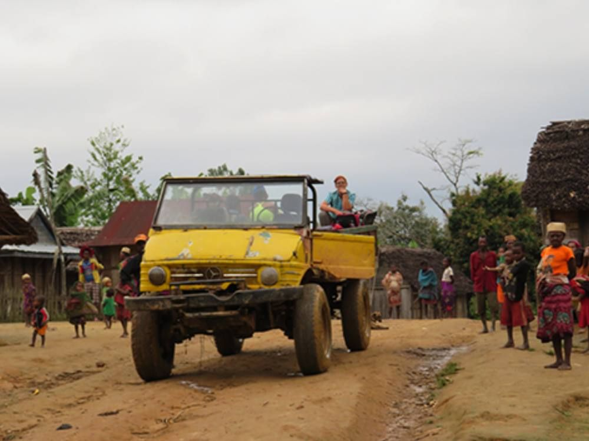
Die Abfahrt ist etwas überstürzt um 07:15 Uhr. Wir sitzen auf der Ladefläche, resp. auf irgendwelchen Gegenständen und lassen uns durchschütteln. Oft besteht die Strasse nur aus zwei knietiefen Wasserrinnen und wir befürchten immer wieder, dass wir stecken bleiben. Aber der Chauffeur meistert die Strecke mit Bravour. Unterwegs gibt’s einen kurzen Verpflegungsstopp und um 14:30 Uhr treffen wir in Sahovato ein. Wir halten nur kurz und fahren bald weiter bis zum Fluss mit der Fähren-Anlegestelle. Nur leider gibt es keine Fähre mehr. Michaël organisiert eine Piroge für uns, mit der wir übersetzen können. Und schon bald sind wir wieder in einem Bungalow. Nach dem Nachtessen verkriechen wir uns zügig dann in unsere Betten.Tag 9:
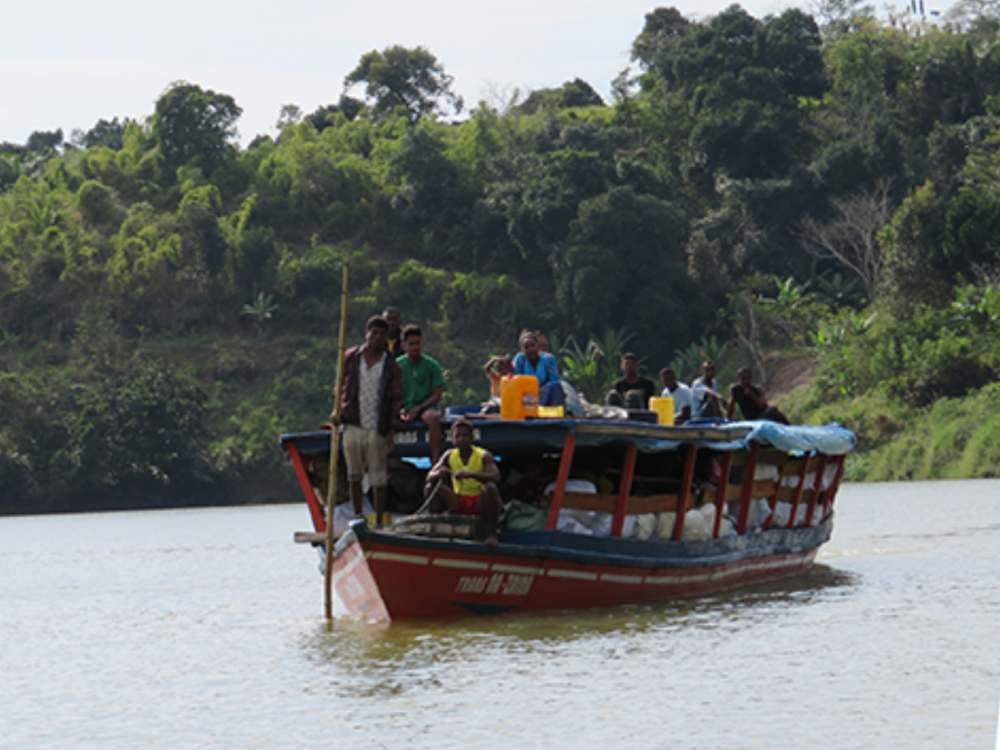
Nach dem Frühstück im Bungalow-Hotel steigen wir um 8 Uhr in ein Schiff, das uns zunächst auf dem Sakaleona-Fluss und dann auf dem Pangalanes-Kanal bis nach Nosy Varika bringt. Es ist eine schöne und ruhige Fahrt, auf der wir etwas vor uns hindösen.Um 12 Uhr treffen wir dann in Nosy Varika ein und gehen zum Hotel Volazara, wo uns Mme Caroline erwartet. Für mich ist es fast wie ein nach Hause kommen, so war ich doch vor zwei Jahren schon einmal hier.
Peter Elliker